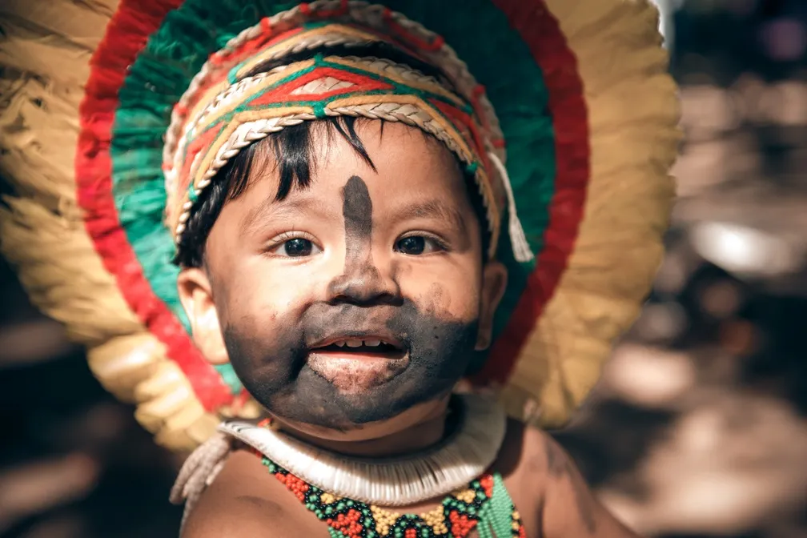

História dos Pataxós
Os Pataxós são um povo indígena que habita principalmente a Terra Indígena Barra Velha do Monte Pascoal, no sul da Bahia, e tem uma forte conexão com a terra, cultura e espiritualidade. Sua história é marcada pela resistência desde o período colonial, quando sofreram ataques, escravização e perda de territórios para os colonizadores portugueses. Apesar das adversidades, conseguiram manter sua identidade cultural viva e, ao longo do século XX, intensificaram a luta pela demarcação de suas terras tradicionais. Hoje, além da Terra Indígena Barra Velha, ocupam outras áreas como Imbiriba, Coroa Vermelha e Aldeia Velha, enfrentando desafios como a pressão do turismo e do governo sobre suas terras. A resistência dos Pataxós continua a ser um símbolo de força, preservando suas tradições e valores.
Da família linguística pataxó, esse grupo encontra-se nos estados da Bahia e Minas Gerais.
Os pataxós são um povo indígena seminômade da Bahia, com uma população de cerca de 11.833 pessoas em 2010. Eles pertencem à família linguística maxakali, do tronco macro-jê. A maior parte do povo pataxó vive na Terra Indígena Barra Velha do Monte Pascoal, no sul de Porto Seguro, em um território de 20.000 hectares, entre os rios Caraíva e Corumbau. Além dessa área, há outros seis núcleos de povoamento: a Terra Indígena Imbiriba, Coroa Vermelha, Aldeia Velha, Mata Medonha, Cumuruxatiba (Cahy-Pequi) e Barra Velha, todos na região sul da Bahia. A Terra Indígena Coroa Vermelha, mais recente, é conhecida pela atividade artesanal e pelo turismo.
Língua Falada
O povo pataxó fala o português.
A língua dos pataxós, persistiu até 1938. Após a chegada do SPI, houve um choque cultural, os índios eram obrigados a aprender a língua portuguesa, por esse motivo a língua da comunidade foi "perdida". Ainda existem anciões que recordam da sua antiga língua.
Desde 1998, um grupo de professores e pesquisadores do povo Pataxó (sul do estado da Bahia) passou a realizar, de forma autônoma, pesquisas documentais e de campo resgatando registros históricos e memórias dos anciões com o intuito de retomar sua língua originária, dada por extinta em meados do século passado. A língua retomada foi então batizada como "Patxohã" (língua de guerreiro). O ensino da língua tem sido feito em escolas.
Os Pataxó falam o português, mas usam um pequeno vocabulário resgatado de sua língua nativa, pertencente à família linguística maxakali. Um conjunto de famílias linguísticas diferentes constitui um tronco-linguístico que, nesse caso, é o Macro-Jê.
Resgatar um idioma é também uma forma de preservação da memória de um povo. Por isso, um grupo de pesquisadores Pataxó se dedica ao processo de retomada de sua língua. Para eles, trata-se de uma reconstrução coletiva!

Danças e Festas
Na Aldeia Barra Velha os pataxós organizam luaus culturais, comemorações, casamento, e outras festividades conhecidas por eles por Kãdawe, algumas das quais são abertas aos turistas. Os índios jovens e em idade de casar cortejam as moças, jogando flores, e depois participam da corrida de toras. Passam três dias na mata, e ao fim desses três dias, eles deverão voltar com caça para provar que são guerreiros fortes e com capacidade de sustentar sua jokana ("mulher"). Finalmente, em uma grande festa com a participação de todos da aldeia, lideranças anciãs como o pajé realiza a cerimônia de casamento.
Os rituais pataxó
A forma com que nos casamos mudou muito com o tempo, não é? Com o povo Pataxó, também foi assim. Há relatos de que, antigamente, o casamento era realizado entre primos, que deveriam provar sua força com um desafio: os noivos em potencial precisavam carregar uma tora de madeira!
O Awê é outro ritual bastante tradicional entre o grupo indígena. O termo se refere a diferentes momentos de festa, marcados por coreografias específicas. O caium, bebida alcoólica produzida a partir de raízes e tubérculos, não pode faltar!